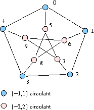
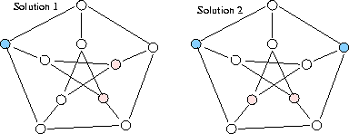

Kernel extraction, number of kernels
The data set presents the Petersen graph. This famous graph represents the non set inclusion relation on the 10 triplets it is possible to build with 5 objects.

The Petersen graph, contructed from both the circulants {-1,1} (blue nodes) and {-2,2} (pink nodes) on a five element set X = {1, 2, 3, 4,5 } is highly symmetric and therefore supports 15 kernels, a number that is larger than its order (n = 10). These kernels may however be organized into solution types that in fact are isomorphic with respect to the automorphism group of the Petersen graph.
The Petersen graph suggests the idea that for any (sufficiently ?) connected k-regular graph, the number of unlabelled kernel solutions, i.e. solutions isomorphic modulo all possible symmetry rotations and reflections, might be lower or equal to the order of the graph.
In fact, the unlabelled kernel number of the Petersen graph is 2.
These four generators of the Petersen graph automorphism group map on the kernel equation system solution space 2 orbits listed below:
{'3', '6', '5'}
{'2', '9', '5'}
{'8', '1', '9'}
{'7', '4', '6'}
{'0', '8', '7'}
{'1', '4', '5'}
{'8', '2', '4'}
{'7', '1', '3'}
{'0', '2', '6'}
{'0', '9', '3'}
{'0', '8', '2', '9'}
{'1', '9', '5', '3'}
{'2', '4', '6', '5'}
{'0', '7', '3', '6'}
{'8', '7', '1', '4'}
Both choice types are illustrated below:
Holton, D.A. & Sheehan, J., The Petersen Grpah. Cambridge University Press, 1993.
Return to main Digraph3 Data Sets
Responsible author: R. Bisdorff, Decembre 2005